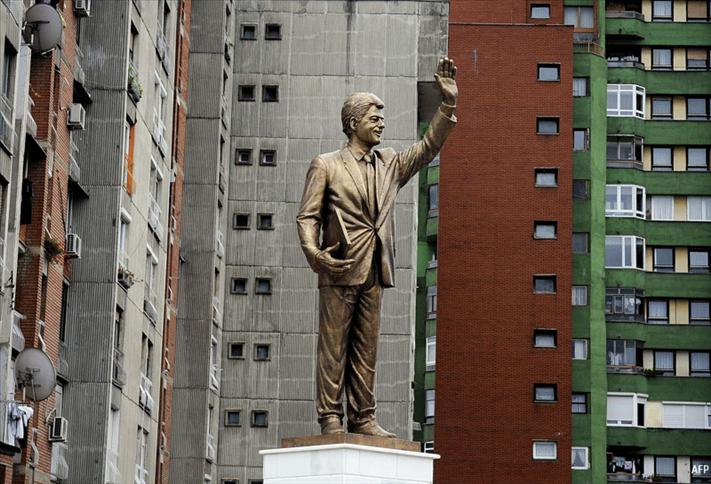
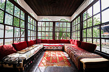
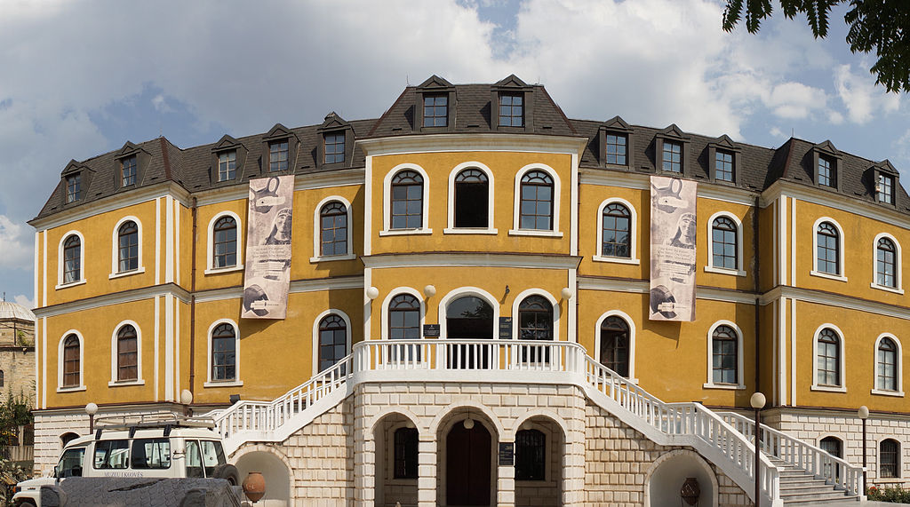
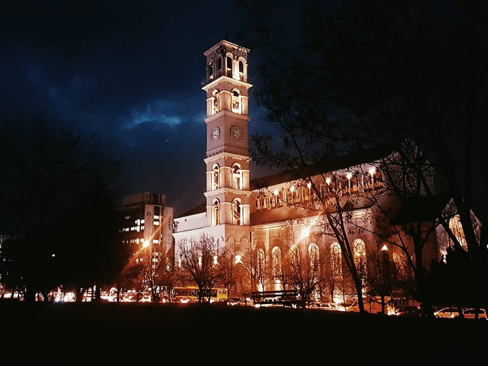
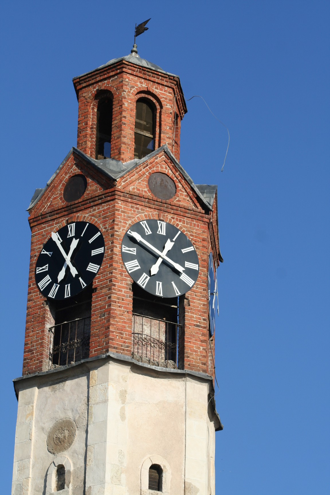
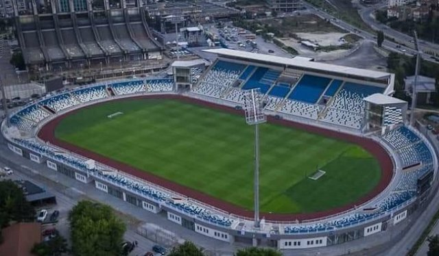

Kultura e kafes
Terhiq foton e siperme tek e poshtmja per te pare efektin Drag&Drop.
Kafeja ne Prishtine eshte nje nder me te mirat. Te gjithe mendojne keshtu, poashtu edhe at ate cilet nuk e adhurojne kafen aq shume. Cmimet e fillojne nga 0.50€ deri ne 2.50€ per kafen me te shtrejt ne menu. Pra, Prishtina eshte nje parajse e kafes per adhuruesit e kafes.
Qyteti eshte i mbushur me kafene duke filluar nga me te thjeshtat deri tek ato qe jane me me stil dhe me ne trend, poashtu edhe klienteli eshte ashtu. Nder te preferuarat jane ‘’Soma book Station’’, ‘’Dit’ e Nat’’, ‘’Haf&Half’’, ‘’Bon Vivant’’, ‘’Kafet e vogla’’ e shume e shume tjera.
Bulevardi Nene Tereza
Bulevardi Nene Tereza (Mother Teresa) eshte sheshi kryesor nder 4 sheshet qe jane te pozicionuara ne te njejtin vend dhe te lidhur njeri me tjetrin.Pra, perveq Nene Terezes jane edhe sheshi Zahir Pajaziti, Skenderbeu dhe Ibrahim Rugova. Keto sheshe jane gjithmone plot me njerez duke ecur posht e larte. Sheshi eshte i gjalle gjate gjithe kohes, si ne mesdite, ne mbremje si dhe gjate gjithe vitit. Pra, edhe gjate motit me shi Prishtina eshte e mbushur me plot njerez.
Duket se te gjithe njerezit jane ne shesh! Adoleshentet dhe studentet jane aty pas mesimit, puntoret pas punes si dhe njerezit e moshuar kalojne kohe duke u shetitur. Poashtu qeveria si dhe disa institucione shteterore jane te pozicionuara afer ‘Bulevardit Nene Tereza’. Pra, te gjithe jane duke bere ‘xhiro’ ne sheshet tona.
Monumenti I NEWBORNIT
Kosova eshte shteti me i ri ne bote. U shpall e pavarur me 17 Shkurt te vitit 2008. Ky monument eshte simbol i nje shteti te ri. Cdo 17 Shkurt ky monument ndryshon pamjen sipas ngjarjeve aktuale ne shoqerine kosovare.
Bibloteka Kombetare
Disa e quajne si bibloteka me e bukur e disa bibloteka si me e shemtuar. Kjo per shkak te pamjes brutale te saj. Kjo bibloteke eshte dizajnuar nga arkitekti Kroat Andrija Mutnjakovic dhe u hap ne vitin 1982.
Organizimi funksional është bërë në bazë të përvojave të bibliotekave bashkëkohore. Biblioteka ka salla të leximit, sallën e periodikut, sallat e fondeve të veçanta dhe sallat, hapësirat për laboratorët e konservimit të librit, foto-laboratorin, libër-lidhëtoren, depot dhe hapësirat administrative. Sallat e leximit janë të ndara në kate: kati i parë – dy salla të mëdha për 400 lexues, kati i dytë – sallat specialistike, në katin e tretë dhe të katërtin janë sallat për punëtorët shkencorë. Depoja e librit është e vendosur në dy katet nëntokësore. Biblioteka ka dy amfiteatro, një me 150 + 40 ulëse dhe një me 75 ulëse. Biblioteka transportin e librave e ka të mekanizuar, ndërsa hapësirat e skedarëve i ka në afërsi me të gjitha sallat e leximit. Biblioteka tani funksionon, por ka nevojë për modernizim të transportit të librave, digjitalizim të skedarëve dhe sallave të leximit si dhe intervenime të tjera.
Sheshi Bill Clinton

Ky shesh eshte I pozicionuasr ne Prishtine, Kosove. Pas luftes se vitit 1998-1999, shqiptaret e Kosoves ne shenje falenderimi ndaj presidentit te shteteve te bashkuara te Amerikes e krijuan kete statuje per ndihmen qe iu dha gjate kesaj periudhe.
Parku i Germise
Eshte nje park qe ndodhet ne Prishtine I cili perfshin nje siperfaqe prej 62km2.Parku I Germise eshte I pasur në pikëpamje floristike, vegjetative dhe faunistike.
Zona për rekreacion dhe pushim fillon prej pishinës e më tutje në brendi të Gërmisë duke përfshirë livadhet, ish pushimoren e fëmijëve, terrenet sportive, ish hotelin e Gërmisë dhe deri te fillimi skiliftit. Kjo zonë është e rrethuar me pyje të dushkut dhe të ahut, me pamje atraktive dhe është I dedikuar për pushim dhe rekreacion. Këto vlera atraktive natyrore dhe ajri i pastër I Gërmisë tërheqin vëmendjen që një numër i madh i banorëve të kryeqytetit dhe rrethinës të kalojnë një pjesë të ditës ose edhe fundjavën në të.
Muzeu Etnologjik

Muzeu etnologjik është pjesë përbërëse e Muzeut të Kosovës. Ky muze është hapur më 27 korrik 2006, respektivisht, për publikun në muajin shtator të vitit 2006.
Kjo ndërtesë dikur ka qenë pronë e familjes së njohur Gjinolli. Prej vitit 1957 ky grup ndërtesash, duke përfshirë këtu shtëpinë e shërbëtorëve, shtëpinë e mysafirëve dhe shtëpinë e familjes, i takon Muzeut të Kosovës. Emin Gjinolli ka qenë i njohur me nofkën ‘Emin Kücük – nga turqishtja ‘Emini i vogël’ – që më pas u shndërrua në ‘Emin Gjiku’. Në anën e majtë, prej derës kryesore të oborrit, mund të shihet e vetmja ndërtesë që ka mbijetuar shkatërrimin e Çarshisë së Vjetër. Është bartë këtu në vitin 1963. Gjatë viteve të 90-ta, ky kompleks është përdorur si muze i natyrës. Në vitin 2003 ka filluar renovimi i kompleksit me ndihmën e donatorëve ndërkombëtarë, për ta shndërruar atë në muze etnologjik Ky kompleks etnologjik është margaritar i trashëgimisë kulturore të Kosovës. Përbëhet nga katër ndërtesa të shekujve tetëmbëdhjetë dhe nëntëmbëdhjetë, dhe ekspozitën etnologjike jashtëzakonisht interesante, e cila tregon jetën në Kosovë në aspektin etnologjik gjatë shek.XV-XX. [3] Ekspozita është e ndërtuar rreth katër temave që përfaqësojnë ciklin e jetës:
•
• Lindjen
• Jetën
• Vdekjen dhe
• Trashëgiminë shpirtërore
Pjesë e këtyre temave janë edhe tematikat:
•
• Familja dhe organizimi i saj
• Ritet e lindjes
• Arti popullor-Zejtari
• Oda dhe funksioni i saj
• Mënyra e jetesës
• Ritet e martesës
• Veshjet popullore të Kosovës
• Ritet e vdekjes
• Trashëgimia shpirtërore
• Etnomuzikologjia në Kosovë
Po ashtu, çdo temë është e shoqëruar me prezentimin multimedial dhe me emisione dokumentare për vizitorët që dëshirojnë informacione shtesë. Ekspozita muzeale është e ndërtuar në formë të tillë, që të ofrojë njohuri të reja për trashëgiminë etnologjike dhe të rrezatojë edukimin relevant në këtë aspekt. Vizitorët do të shoqërohen nga ciceroni për shpjegimin e ekspozitës dhe do të kenë mundësi të thellohen në tematikat përkatëse në lidhje me trashëgiminë kulturore të Kosovës.
Orari i vizitave
E HËNË – E SHTUNË 10:00 – 17:00 E DIELE – PUSHIM
Muzeu i Kosoves

Muzeu i Kosovës është themeluar në vitin 1949, ndërkaq ndërtesa me arkitekturë Austro-hungareze daton që nga viti 1885/6. Ajo ka për qëllim ruajtjen, mbrojtjen dhe prezantimin e Trashëgimisë Kulturore të Kosovës. Muzeu i Kosovës përfshin një koleksion, me më shumë se 50 mijë eksponate të profileve të ndryshme, prej pavijonit të arkeologjisë, teknologjisë, historisë, natyrës, ento-kulturës, folklorit, trashëgimisë etj. Aktualisht, muzeu është duke u angazhuar në rikthimin e 1200 objekteve/artefakteve të rëndësishme për trashëgiminë kulturore të Kosovës, të marra nga Beogradi gjatë vitit 1998. Muzeu i Kosovës gjendet në rrugën Nazim Gafurri

Xhamia e Jashar Pashes
është ndërtuar në vitin 1834 nga kryetari i Shkupit Jashar Mehmet Pasha. Xhamia ndodhet në rrugën Nazim Gafurri, Prishtinë dhe është një nga xhamitë e vjetra në Kosovë.
Katedralja Nene Tereza

është një Katedrale Katolike në Prishtinë, Kosovë. Në vitin 2007, Qeveria e Kosovës ka miratuar planet për ndërtimin e[1]katedrales dedikuar misionares, "Nënë Tereza". Eshte e pozicionuar ne qender te Prishtines. Perpara se te ndertohej kjo katedrale ne ate vend ishe shkolla e mesme Xhevdet Doda. Kjo ngjarje shkaktoi shume polemika gjate asaj kohe. Ideja e ndërtimit të një katedrale të tillë ishte propozuar nga ish - Presidenti i Kosovës, Ibrahim Rugova, i cili vetë ishte një Musliman.[2] Ajo është inaguruar më 26 gusht të vitit 2010, të njëqind vjetorin e saj të lindjes, përpara përfundimit të ndërtimit.
Sahat Kulla

është një monument i vjetër i trashëgimisë kulturore e që ndodhet në kryeqendren e Republikën e Kosovës, në Prishtinë.
Sahat Kulla gjendet në bërthamën e zonës kulturo-historike të Prishtinës. Është ndërtesë me vlera kulturore, historike dhe arkitekturore e ndërtuar në shekullin XIX. Sahat Kulla gjendet në pjesën qendrore të pjesës së vjetër të Prishtinës në afërsi të Xhamisë së Mbretit dhe gjendet në oborr të ndërtesës së gjimnazit. Është një ndër monumentet më të rëndësishme të arkitekturës utilitare në Prishtinë. Sahat Kulla është ndërtuar kah fundi i shek. XIX në afërsi të vendit ku ka ekzistuar sahat kulla e përparme. Mekanizmi i orës ka funksionuar deri në vitet ‘70, ndërsa deri në vitin 2001 nuk ka funksionuar, po në këtë vit është vjedhur mekanizmi i orës dhe kambana, ndërsa nga viti 2002 mekanizmi i orës është zëvendësuar me orë digjitale. Në këtë sahat kullë gjendej kambana e vjetër të cilën turqit gjatë luftërave të tyre në Moldavi dhe Vllahi e morën si plaçkë lufte dhe si të tillë e sollën në Vushtrri dhe e vunë në sahat kullë. Sipas urdhrit të Jashar Pashës kambana është sjellë nga Vushtrria në Prishtinë.
Në sipërfaqen e kambanës gjendej mbishkrimi rumun nga viti 1764 i vojvodës Jan Moldovanit që në përkthim do të thotë "Kjo Kambanë është punuar për vojvodën Jan Moldovanin në vitin 1764", shkronjat janë të mëdha me gjatësi 2 cm dhe shtrihen përreth tërë sipërfaqes së kambanës. Kambana është dekoruar me numër të madh të ornamenteve të ngjashme me gjethet e ahut. Edhe pse ka kaluar rrugë të gjatë dhe shpesh ka ndërruar vendet dhe selitë ishte në gjendje të mirë dhe nuk kishte dëmtime të mëdha. Sahat Kulla është ndërtesë me bazë gjashtëkëndëshe. Lartësia e saj është 26 m, e murosur me gurë deri në lartësinë 16.5m dhe me tulla të plota në pjesën tjetër të ndërtesës. Konstruksioni i kulmit është prej druri të mbuluar me plumb. Në të gjitha fasadat e sahat kullës ka hapje të vogla harkore. Këndet e ndërtesës janë të ndërtuara me gurë të gdhendur të lidhur me llaç gëlqeror, kurse sipërfaqet në mes janë të ndërtuara me gurë të parregullt të lidhura dhe të suvatuara gjithashtu me llaç gëlqeror. Në brendi janë shkallët rrethore, në të cilat janë të vendosura pllaka të gurëve (rrasa) me trashësi prej 3 cm. Në pjesën e sahat kullës të ndërtuar prej tullave shkallët janë prej druri, çka tregon se kjo pjesë është ndërtuar më vonë.
Stadioni Fadil Vokrri

Se pari u hap ne vitin 1953 pas dy vitesh ndertimi. I njohur deri tash si Stadioni I Prishtines eshte nje stadion i përdorshëm për shumë qëllime,kryesisht ndeshje
futbolli dhe eshte shtepia e FC Prishtina dhe ekipit kombetar te Kosoves. Ka nje kapacitet prej 13,500 ulesesh.
Me 17 Dhjetor 2007, stadioni u mbush me 25,000 spektatore, per te paren here pas luftes se Kosoves
ne nje koncert nga reperi amerikan 50 Cent. Me 10 korrik 2010 reperi tjeter amerikan Snoop Dog mbajti nje koncerti
cili grubulloi hiq me pak se 10,000 spektatore.
Me 15 Korrik 2012m reperi shqiptar Unikkatil mbajti nje koncert te njohur si me i madhi shqiptar i mbajtur ndonjeheer mblodhi 25,000 spektatore
per te pare koncertin e "mbretit te repit shqiptar".